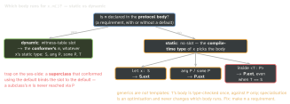

swift · folio
In one line: A generic signature is a set of requirements the compiler checks at the call
site: some P in a parameter is an unnamed generic <T: P>, any P
is a box for any conformer, a primary associated type (Collection<Int>) constrains
either, and where adds same-type / superclass / conformance rules. Which method body runs
is decided by one question: is it a protocol requirement? Yes → dynamic (witness
table); no → the static type picks.
Download PDF Print view LaTeX source

protocol P { func req() -> String }
extension P {
func req() -> String { "P.req" } // default
func ext() -> String { "P.ext" } // ext-only
}
struct S: P {
func req() -> String { "S.req" }
func ext() -> String { "S.ext" }
}
func gen<T: P>(_ x: T) -> String {
x.req() + " " + x.ext() }
gen(S()) // "S.req P.ext" (!)
let e: any P = S()
e.req(); e.ext() // "S.req", "P.ext"
S().ext() // "S.ext"
some and any — one line each
func draw(_ s: some Shape) // 5.7 SE-0341 = func draw<T: Shape>(_ s: T)
func draw(_ a: some Shape, _ b: some Shape) // TWO independent types
func draw(_ xs: [some Shape]) // ONE hidden type for every element
func draw(_ xs: [any Shape]) // a box per element: types may mix
func make() -> some Shape // callee picks ONE type; every return same
func make() -> any Shape // may differ per call; always boxed
func ints() -> some Collection<Int> // 5.7 SE-0346 primary associated type
let c: any Collection<Int> = Set([1]) // 5.7 SE-0353 constrained existential
func two() -> (some View, some View) // 5.7 SE-0328 structural opaque result
protocol Store<Item> { associatedtype Item } // declares the primary type
let a = make(), b = make(); a == b // compiles if make() -> some EquatableOpening an existential (5.7, SE-0352)
func area<T: Shape>(_ s: T) -> Double { s.area }
let s: any Shape = Circle(r: 1)
area(s) // OK: s is OPENED, T = its dynamic type (Circle)
drawAll(shapes) // [any Shape] to [some Shape]: error - opening is
// top-level only; 'any Shape' cannot conform to 'Shape'
func dup<T: Shape>(_ s: T) -> T; dup(s) // result erased back to any Shapeany P does not conform to P (no self-conformance) — except
any Error (and some @objc protocols). Opening is the way in.
Metatypes — Self, self, .Type, .self
self / Self // this instance / its type (protocol: the conformer)
func copy() -> Self // in a class: the DYNAMIC type; needs required init
Int.self // the metatype VALUE; its type is Int.Type
decode([User].self, from: d) // pass a type as an argument
type(of: view) // dynamic type: UIButton even via a UIView variable
any Shape.Type // metatype of SOME conformer: .init(), static members
(any Shape).Type // metatype of the box itself (was Shape.Protocol)
T.init() // needs an init() requirement / required initRequirement shapes — what satisfies what
protocol Shape {
var area: Double { get } // let, var, stored or computed all satisfy
var name: String { get set } // needs a settable var (not let)
static var unit: Self { get } // static: reachable via any Shape.Type
init(size: Double) // class conformer: `required init` (or final)
mutating func scale(by k: Double) } // a class implements it WITHOUT mutating
@objc protocol Legacy { @objc optional func tick() } // optional = @objc onlyConstraints and where
func save<T: Codable & Identifiable>(_ x: T) // composition
func style<V: UIView & Themable>(_ v: V) // superclass + protocol
protocol Delegate: AnyObject { } // class-only: can be weak
func merge<A: Sequence, B: Sequence>(_ a: A, _ b: B)
where A.Element == B.Element // same-type requirement
extension Array where Element == String { } // concrete same-type
extension Collection where Element: Numeric {
var total: Element { reduce(0, +) } } // constrained API
struct Box<T> { var v: [T]
func sorted() -> [T] where T: Comparable { v.sorted() } } // 5.3 SE-0267
extension Box: Equatable where T: Equatable {} // conditional conformance
extension P where Self: UIViewController { } // only for VC conformersAssociated types · generic subscripts · ~Copyable
protocol Feed {
associatedtype Item: Identifiable = Post // constraint + default
associatedtype Page: Sequence where Page.Element == Item
func load() async throws -> Page }
struct JSON { subscript<T: Decodable>(key: String) -> T? { nil } }
let n: Int? = json["count"] // T inferred from the context
struct Pipe<T: ~Copyable>: ~Copyable { var v: T } // 6.0 SE-0427
extension Pipe: Copyable where T: Copyable {} // copyable only if T is
func zip<each A>(_ a: repeat each A) // variadic: see the packs sheetTraps
[some P]is homogeneous,[any P]heterogeneous — different APIs.some Pparameters can’t be named or related: use<T>when two arguments must share a type.:=->some Pwith anifreturning two types: error (unless a result builder wraps it).- Bare
Pas a type still meansany P; an associated-type protocol needsany; the upcoming featureExistentialAnyrequires it everywhere. - On
any Pa member that returnsSelf/an associated type is erased to its bound (5.7, SE-0309); one that takesSelf(:===) can’t be called — open the box first.
Remember
“some = the callee’s one type · any = a box · requirement = dynamic,
extension-only = static, even in generics.”